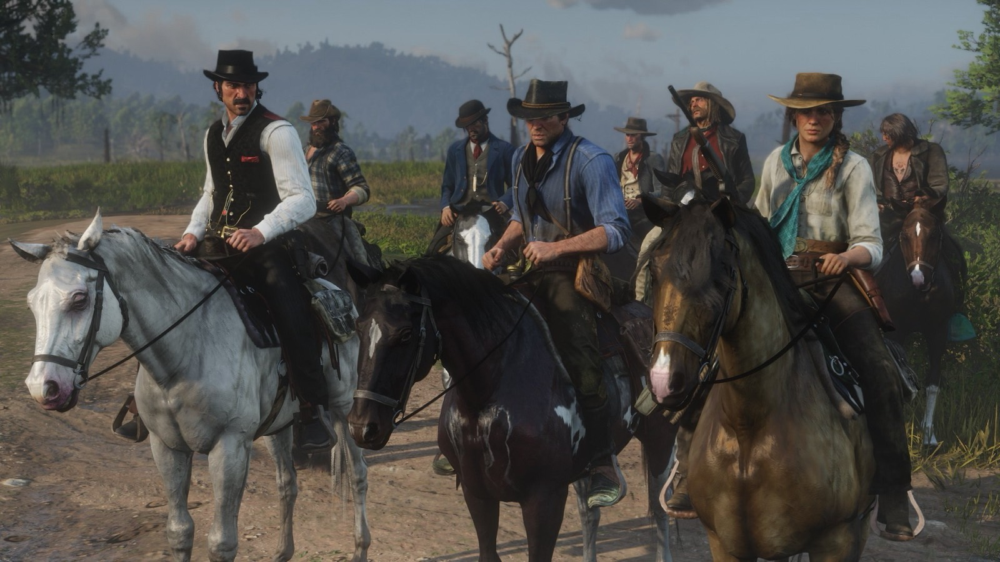
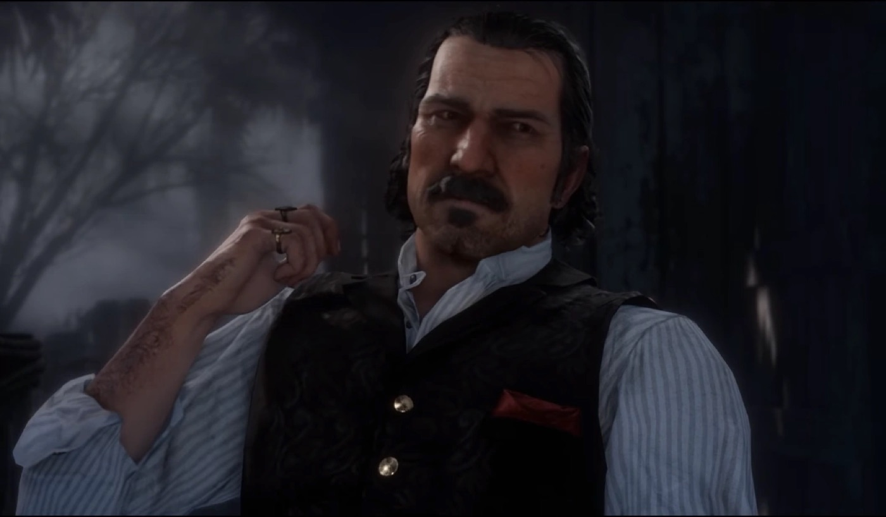
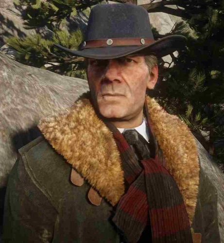
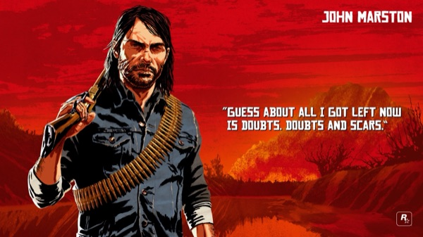
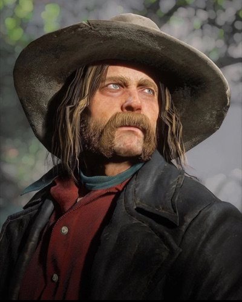
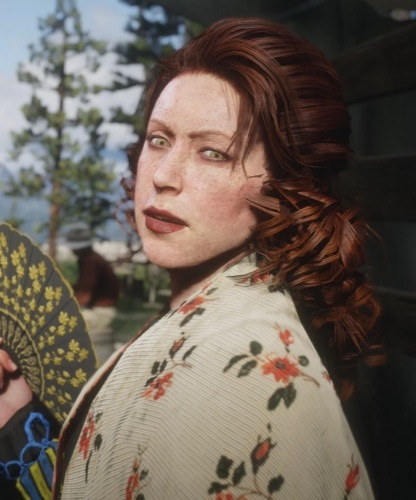
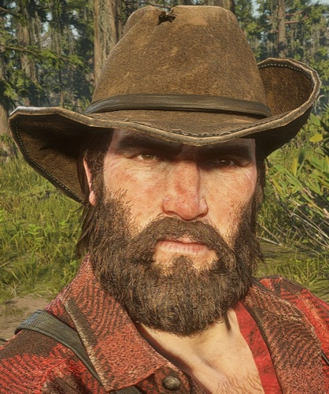
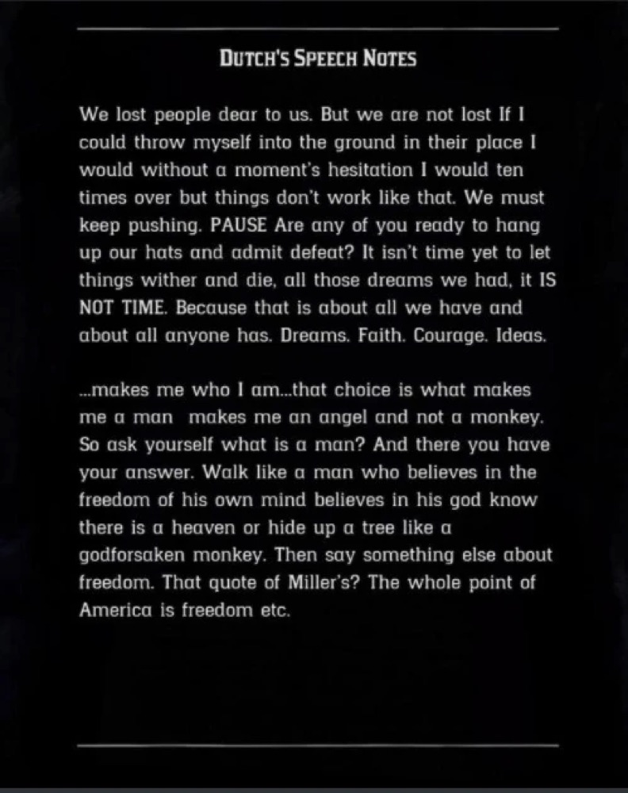

Character · Van der Linde gang
Dutch van der Linde
Dutch van der Linde is the charismatic leader and co-founder of the Van der Linde gang, and one of the central figures of the entire Red Dead Redemption series. A silver-tongued idealist who preaches freedom and loyalty, Dutch is the father figure who raised both Arthur Morgan and John Marston, and the man whose slow unravelling drives the tragedy of Red Dead Redemption 2.
Across 1899, as the law and the modern age close in, Dutch's dream curdles into paranoia and violence. By 1911 he is a broken echo of himself, hunted through the mountains by the very men he once called sons. He was voiced by Benjamin Byron Davis in both games.
- Died
- 1911
- Status
- Deceased
- Nationality
- American
- Affiliation
- Van der Linde gang (leader)
- Role
- Gang leader and co-founder
- Ideology
- Freedom, loyalty, life outside "civilization"
- Games
- Red Dead Redemption, Red Dead Redemption 2, Red Dead Online
- Voiced by
- Benjamin Byron Davis
Biography
The gang's founder
Together with Hosea Matthews, Dutch van der Linde built the Van der Linde gang into a tight-knit outlaw family bound by a creed: loyalty to one another and freedom from a society they saw as corrupt. Over the years Dutch took in orphans and outcasts, most famously a teenage Arthur Morgan and, later, a young John Marston, raising them as gunmen and as sons.
The Blackwater disaster (1899)
By 1899 the frontier is closing. A ferry robbery in Blackwater goes catastrophically wrong, forcing the gang to flee east into the snow with money they cannot spend and the law on their heels. Red Dead Redemption 2 opens in that retreat, and Dutch spends the rest of the story chasing one more big score that will finally set everyone free.

Unravelling
Each failed plan pushes Dutch further from the principled leader his men remember. He grows paranoid, secretive and quick to violence, abandoning members and rationalising every death as a necessary cost. As Micah Bell gains his ear, Dutch turns on the people most loyal to him, Arthur and Hosea above all, and the family tears itself apart.
Personality
Dutch is a born orator: warm, theatrical and genuinely persuasive, able to make hardened outlaws believe in a better tomorrow. He quotes philosophy, champions the downtrodden, and frames the gang's crimes as resistance against a cruel modern world.
That same charisma is his danger. Beneath the ideals sits a man who cannot admit failure, who bends every fact to fit his plan and discards anyone who questions him. His repeated promise, "I have a plan", curdles from reassurance into a warning as the story goes on.
Relationships

Hosea Matthews
Co-founder of the gang and Dutch's oldest friend and conscience. As long as Hosea is alive, he keeps Dutch's worst instincts in check.

Arthur Morgan
The son Dutch raised and trusted most, until his growing recklessness costs him Arthur's faith in the gang's cause.

John Marston
Another of Dutch's surrogate sons. Years later, in 1911, John is forced to hunt the man who raised him.

Micah Bell
The newcomer who feeds Dutch's paranoia and steers him toward ruin, all while secretly betraying the gang.

Molly O'Shea
Dutch's lover, increasingly neglected as his obsessions take over, with tragic consequences.

Bill Williamson
A loyal, blunt-edged enforcer who follows Dutch to the end and resurfaces as an outlaw in 1911.
Death and fate
Dutch survives the gang's collapse but vanishes for years. By 1911 he has gathered a new band of followers in the mountains, and a coerced John Marston is sent to bring him down. When John finally corners him at the edge of a cliff, there is no last stand left in Dutch.
He looks at the man he raised, says "Our time has passed, John," and steps backwards off the precipice, taking his own life rather than be captured. It is a quiet, devastating end for a man who once promised his family the whole world.

Behind the scenes
Dutch was performed by Benjamin Byron Davis in both Red Dead Redemption (2010) and Red Dead Redemption 2, making him one of the few actors to reprise a major role across the series. His layered performance, charming one moment and chilling the next, is central to why Dutch reads as both inspiring and frightening.
Because the original game already showed Dutch's end, Red Dead Redemption 2 had the difficult task of making players trust and follow a leader they knew was doomed. The prequel uses that dramatic irony deliberately.
Reception and legacy
Dutch van der Linde is widely regarded as one of gaming's great antagonists precisely because he is not a simple villain. Players spend a whole game wanting to believe in him, which makes his descent all the more painful.
His ideology, his contradictions and his catchphrases have become franchise touchstones, and any future Red Dead entry will be measured against the shadow he casts over the series.
Trivia
- Dutch appears in Red Dead Redemption (2010), Red Dead Redemption 2 (2018) and Red Dead Online.
- His recurring line "I have a plan" becomes grimly ironic as his plans repeatedly fail.
- He is named after his own gang, or rather, the gang is named after him, lending it the family identity he prizes.
- His death in 1911 was depicted years before Red Dead Redemption 2 let players live through how he got there.